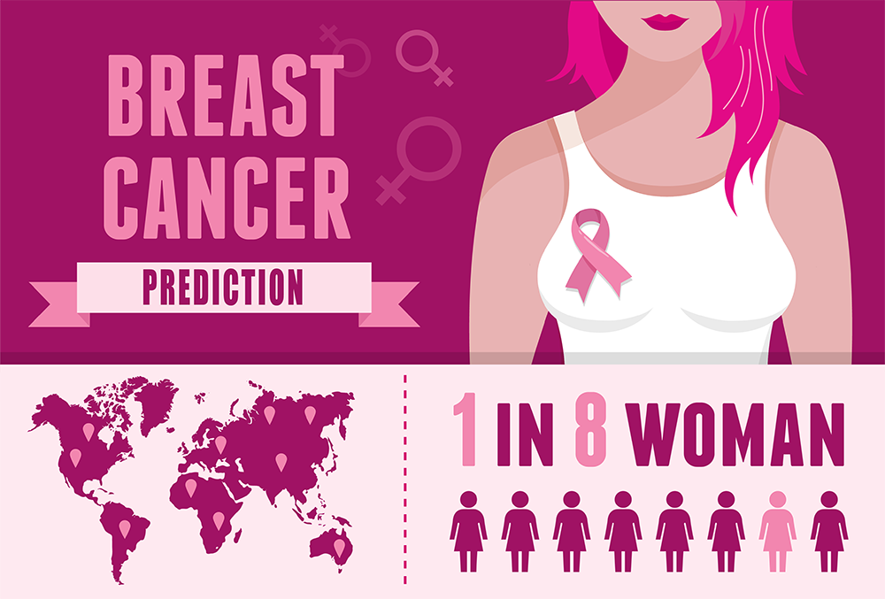

Machine learning is a subset of artificial intelligence (AI) that focuses on the development of algorithms and statistical models that enable computer systems to learn from and make predictions or decisions based on data, without being explicitly programmed for each specific task. In essence, machine learning allows computers to improve their performance on a task as they are exposed to more data.


customer churn prediction project in a telecom company is a reduction in churn rates and an increase in customer retention. This leads to financial benefits, improved customer satisfaction, and a competitive edge in the industry. Additionally, the project establishes data-driven decision-making processes for ongoing improvement.

" The TMDB-5000 dataset is a rich source of movie-related data, including information about over 5,000 movies, user ratings, and metadata. The recommendation system aims to leverage this dataset by implementing an average weighted recommendation algorithm that considers various factors to suggest movies that closely match a user's preferences. These factors may include user ratings, genres, popularity, and similarity to previously liked movies. "

The problem statement sets the context for the project and defines what you aim to achieve. In the case of a COVID-19 data analysis project, the problem statement could be something like:
"Analyzing the COVID-19 pandemic data to gain insights into its impact on public health, the economy, and healthcare systems. This analysis will help in understanding the trends, making data-driven decisions, and potentially predicting future outbreaks."

" The "No-Code AI Project for Decision Tree Regression App" aims to create a user-friendly application that empowers non-technical users to perform predictive modeling using Decision Tree Regression. The project involves application development,
algorithm integration, data processing, and visualization to provide users with an accessible tool for regression analysis. The ultimate goal is to make AI accessible to a wider audience and improve predictive capabilities for users without extensive data science knowledge. "

" The problem is to develop a predictive model that can predict whether a movie is likely to win an award or receive critical acclaim based on various features related to the movie's production, marketing, cast, and other factors. This predictive model aims to assist the film industry in making strategic decisions about resource allocation and marketing strategies for upcoming movies. "

"Lifestyle diseases, such as diabetes, hypertension, and obesity, pose a significant healthcare challenge, leading to high hospital readmission rates. These chronic conditions not only affect the quality of life for patients but also impose a substantial economic burden on healthcare systems. To address this issue, we aim to investigate the impact of medication management on hospital readmission rates for patients with lifestyle diseas
" The Book Recommendation System using the BX-Dataset aims to enhance readers' book discovery experience by providing personalized book recommendations. This system employs the k-Nearest Neighbors (k-NN) algorithm to identify books that closely match users' reading preferences. By utilizing the BX-Dataset, the system intends to improve the accuracy and relevance of book suggestions, ultimately promoting more enjoyable and tailored reading experiences."

The problem statement for this project is to develop a machine learning model for breast cancer prediction. Specifically, it involves classifying breast masses as either malignant or benign based on features extracted from digitized images of fine needle aspirates (FNAs). The goal is to provide a tool that aids in the early detection and diagnosis of breast cancer.

"The problem at hand is to predict whether a passenger on the Titanic survived or not during its ill-fated voyage. This is a classic binary classification problem where we aim to determine the survival status (survived or not survived) of each passenger based on various available features."

"Salary Prediction based on Country and Race" project seeks to leverage machine learning techniques to analyze a dataset containing salary and demographic information to predict income levels and gain insights into the complex relationships between income and various socio-demographic factors, with a particular emphasis on country and race.

"Sleep Disorder Prediction" project seeks to use machine learning techniques to analyze a dataset containing sleep-related variables and health metrics to predict the presence of sleep disorders and gain insights into the potential risk factors and habits associated with sleep disturbances.

"E-Commerce Product Delivery Prediction" project seeks to leverage machine learning techniques to predict delivery outcomes and analyze customer behavior in an international e-commerce company, with the ultimate goal of improving the overall delivery process and customer experience.